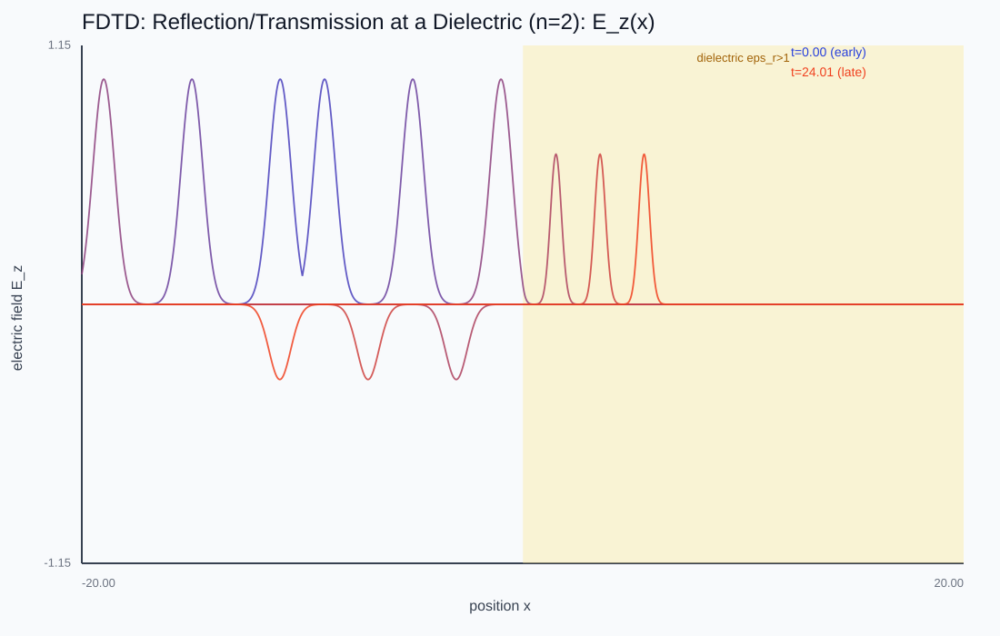
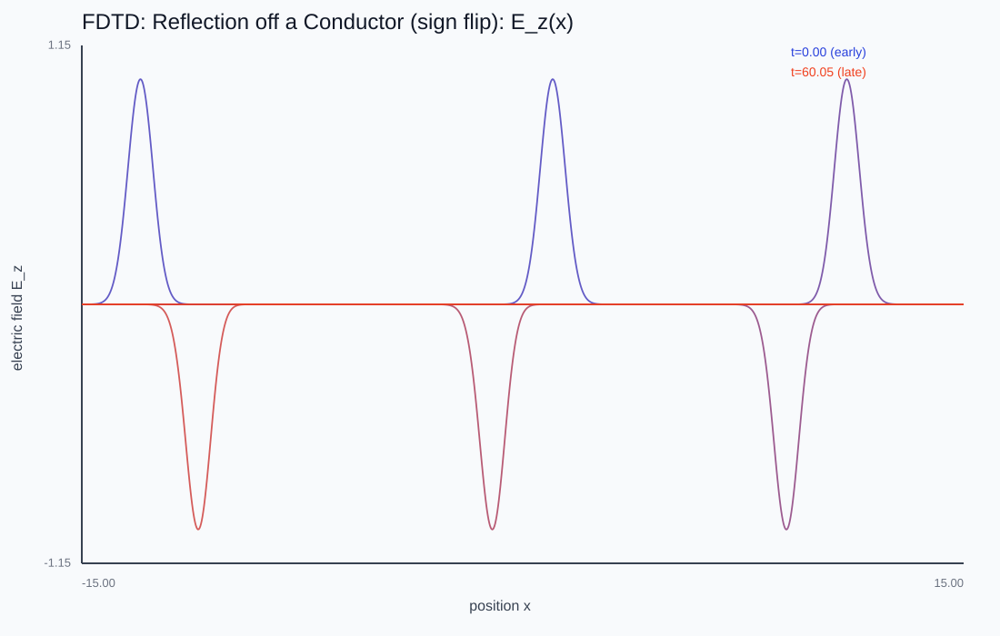
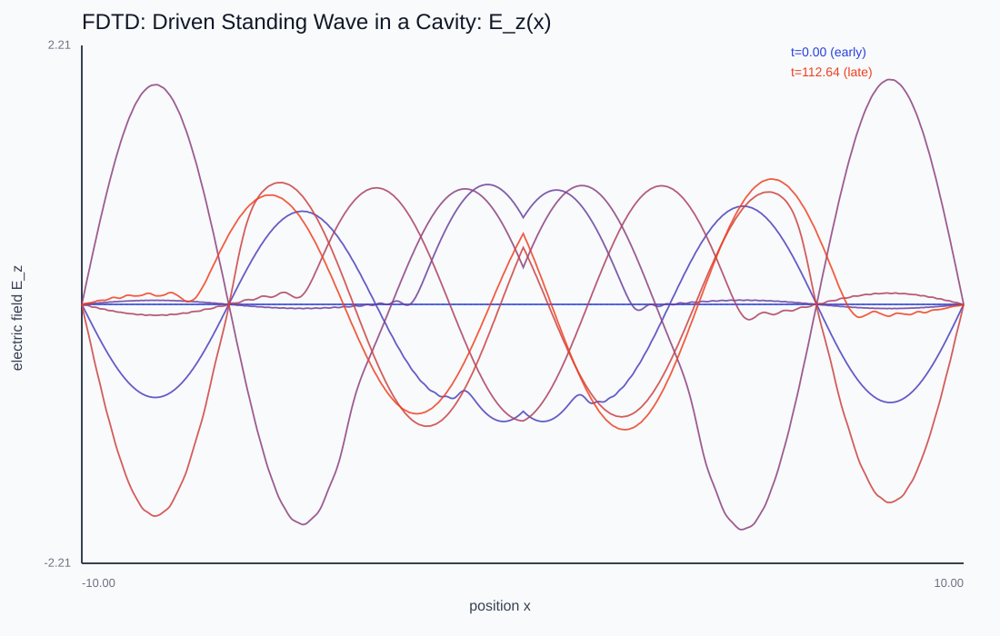
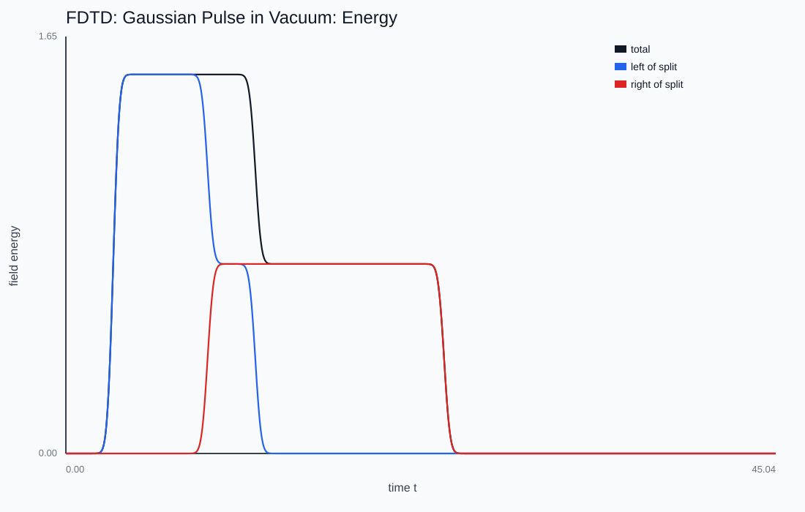

Maxwell FDTD
A changing E makes a changing H and vice versa; the two leapfrog through space as light. How do you simulate fields that generate themselves?
A 1D Maxwell FDTD pulse. Drop in a dielectric slab (n=2) and watch the wave split — part reflects, part transmits at a slower speed — or switch the right wall between a perfect-conductor mirror (inverting) and an absorbing boundary.

Two curls feeding each other
In 1D, dH/dt = -dE/dx and dE/dt = -(1/ε_r) dH/dx. Each spatial slope drives the other field in time; combine them and you recover the wave equation with speed c/√ε_r. The permittivity dividing the E update is the microscopic origin of the refractive index n = √ε_r.

The Yee leapfrog
Stagger E on integer points and H on the half-points between them, and step them alternately. Both updates become centered second-order differences, and in vacuum at Courant number S ≤ 1 the scheme is non-dissipative — energy sloshes between E and H without decaying. It is to Maxwell what the mass-spring chain was to the scalar wave equation.

Reflection, refraction, resonance
Absorbing (Mur) boundaries let a pulse leave the grid; a perfect conductor mirrors it with inversion. A dielectric interface splits a pulse with the exact Fresnel reflectance ((n₁-n₂)/(n₁+n₂))², and two conductors turn a continuous source into a standing-wave cavity — the electromagnetic echo of the fixed-fixed string.

This chapter is drawn from the physics-lab study notes and renders. The longer write-ups and project essays live on the blog.